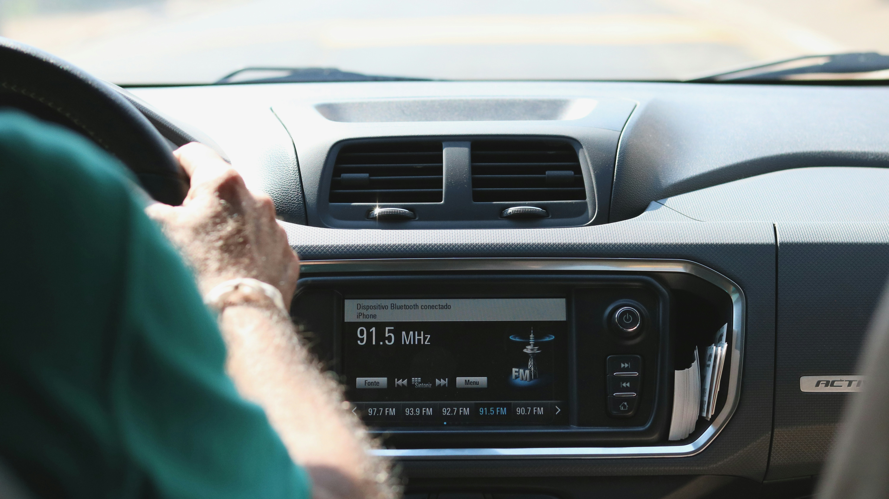

Get step-by-step guidance for satellite radio activation, signal questions, billing inquiries, and subscription changes — a live advisor is ready to help.
📞 +1 (844) 542-8440Connect with a knowledgeable advisor via phone — ready to assist with your satellite radio questions.
Tell us what you need guidance on — activation, signal, billing, or subscription changes — we cover it all.
Our advisor walks you through each step clearly until your question is fully resolved.
New vehicle or new listener? Our advisors guide you through the activation process from start to finish.
Questions about your statement, renewal, or plan options? We help you understand your account clearly.
Experiencing weak or intermittent signal? Our team explains common causes and guides you through standard steps.
Need to upgrade, downgrade, pause, or transfer your plan? We walk you through all available options.